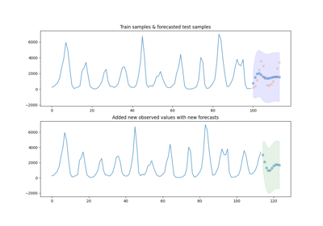

Examples
General examples
General-purpose and introductory examples for pmdarima. These examples are
designed to introduce you to the package style and layout.


ARIMA examples
Examples of how to use the pmdarima.arima module to fit timeseries
models.



Adding new observations to your model
Adding new observations to your model

Datasets examples
Examples of how to use the pmdarima.datasets module to conveniently load
toy time series data for model benchmarking and experimentation.

Cross-validation examples
Examples of how to use the pmdarima.model_selection module to fit
timeseries models in a cross-validated fashion.


Preprocessing examples
Examples of how to use the pmdarima.preprocessing module to transform
your time series or exog features inside or outside of a pipeline.

Utils examples
Examples of how to use the pmdarima.utils module to plot timeseries
data, difference arrays, and more.